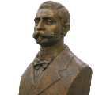

Colegiul Dobrogean "Spiru Haret" este cea mai veche instituție de învățământ liceal din județul Tulcea. Instituția a fost înființată la data de 14 noiembrie 1883 ca "Gimnaziul Real de Băieți" din Tulcea, pentru ca la 1 septembrie 1897 gimnaziul să se transforme în liceu.

Scopul învațamântului nu este numai instrucțiunea ci şi educațiunea tinerimii , şi aceasta a doua parte este mai importantă şi mai grea de realizat decât cea dintâi.
Spiru C. Haret